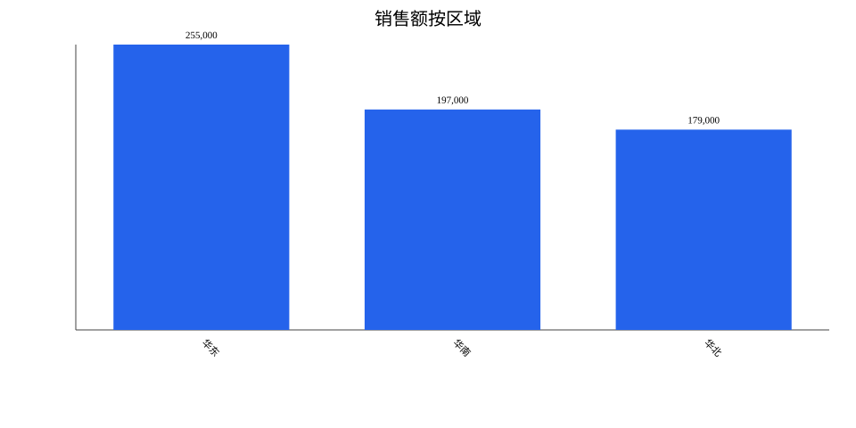

<!doctype html><html lang="zh-CN"><meta charset="utf-8"><title>企业报表分析报告</title><style>body{font-family:system-ui,"Microsoft YaHei",sans-serif;margin:32px;color:#18181b}main{max-width:1100px;margin:auto}h1{font-size:28px}h2{margin-top:30px;border-bottom:1px solid #ddd;padding-bottom:8px}table{width:100%;border-collapse:collapse}th,td{border:1px solid #ddd;padding:8px;text-align:right}th:first-child,td:first-child{text-align:left}.summary{background:#f4f4f5;padding:16px;border-left:4px solid #2563eb}img{max-width:100%}</style><main><h1>企业报表分析报告</h1><h2>问题</h2><p>按区域统计销售额和利润，找出销售额最高的区域</p><h2>结论</h2><p class="summary">区域“华东”的销售额最高，为 255,000，同时利润 51,000。本次结果共包含 3 个分组。</p><h2>图表</h2><h2>结果</h2><table><thead><tr><th>区域</th><th>销售额</th><th>利润</th><th>记录数</th></tr></thead><tbody><tr><td>华东</td><td>255,000</td><td>51,000</td><td>2</td></tr><tr><td>华南</td><td>197,000</td><td>39,000</td><td>2</td></tr><tr><td>华北</td><td>179,000</td><td>31,000</td><td>2</td></tr></tbody></table><h2>假设与限制</h2><ul><li>业务字段依据 LLM Wiki 映射。</li><li>默认对指标使用求和；问题包含“平均/均值”时使用平均值。</li></ul></main></html>